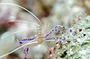

palaemonidae

Definition: Palaemonidae is a family of shrimp in the order Decapoda. Many species are carnivores that eat small invertebrates, and can be found in any aquatic habitat except the deep sea. One significant genus is Macrobrachium, which contains commercially fished species. Others inhabit coral reefs, where they associate with certain invertebrates, such as sponges, cnidarians, mollusks, and echinoderms, as cleaner shrimps, parasites, or commensals. They generally feed on detritus, though some are carnivores and hunt tiny animals.The family contains more than 1200 species in 160 genera. The genera were formerly split into two subfamilies, but in 2015, molecular and morphological research determined that the subfamily groupings were invalid. At the same time, the members of the families Gnathophyllidae and Hymenoceridae were incorporated into the Palaemonidae.
Source: Wikipedia
Wikipedia Page (Something wrong with this association? Let us know.)
Wikidata Page (Something wrong with this association? Let us know.)